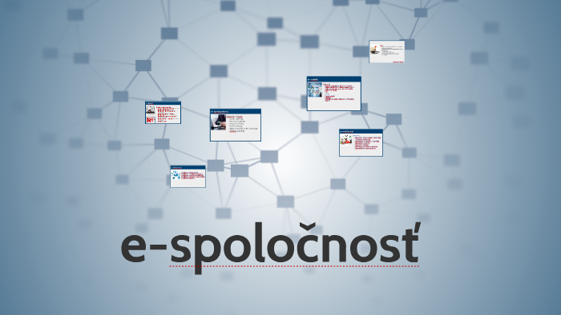

E-commerce alebo elektronické obchodovanie je nakupovanie a predávanie výrobkov alebo služieb cez elektronické systémy ako napríklad internet alebo podobné počítačové siete. Množstvo obchodovania cez elektronickú cestu podstatne narástlo, odkedy sa rozšíril internet. Moderné elektronické obchodovanie obyčajne využíva World Wide Web (WWW) aspoň v niektorej z fáz životného cyklu transakcie. E-commerce je nakupovanie vecí pomocou internetu, ale veľa ľudí nie je presvedčených o jeho spoľahlivosti, pretože existuje veľa neserióznych predajcov. Elektronické obchodovanie sa obyčajne považuje za predajnú stránku širšieho pojmu e-biznis.
